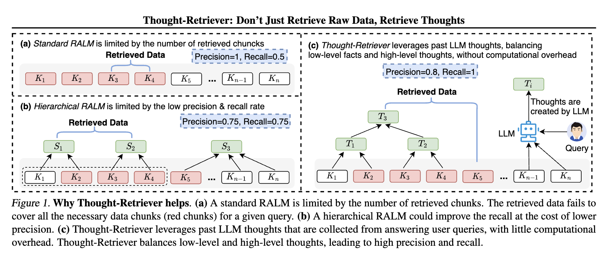
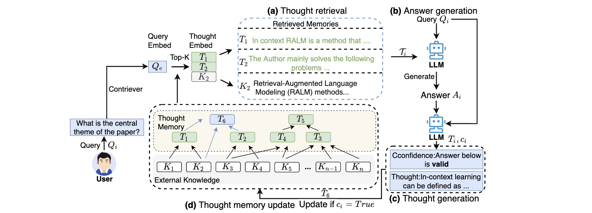
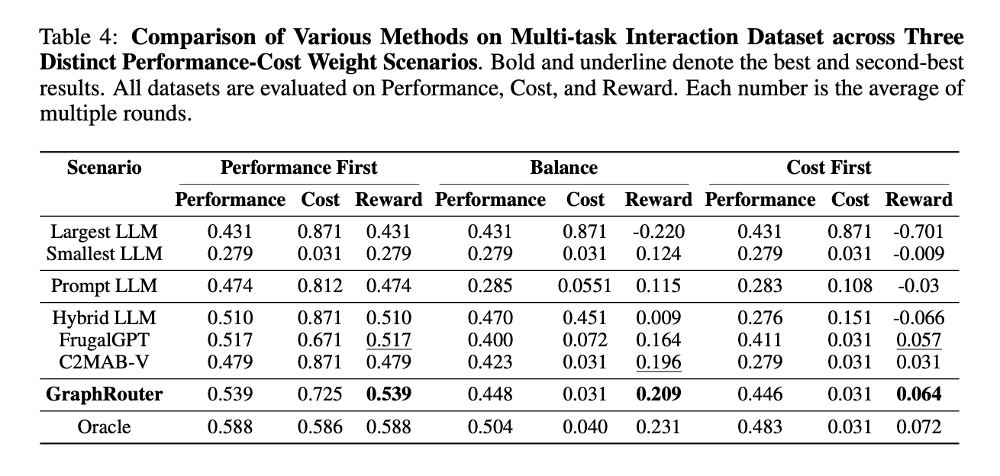
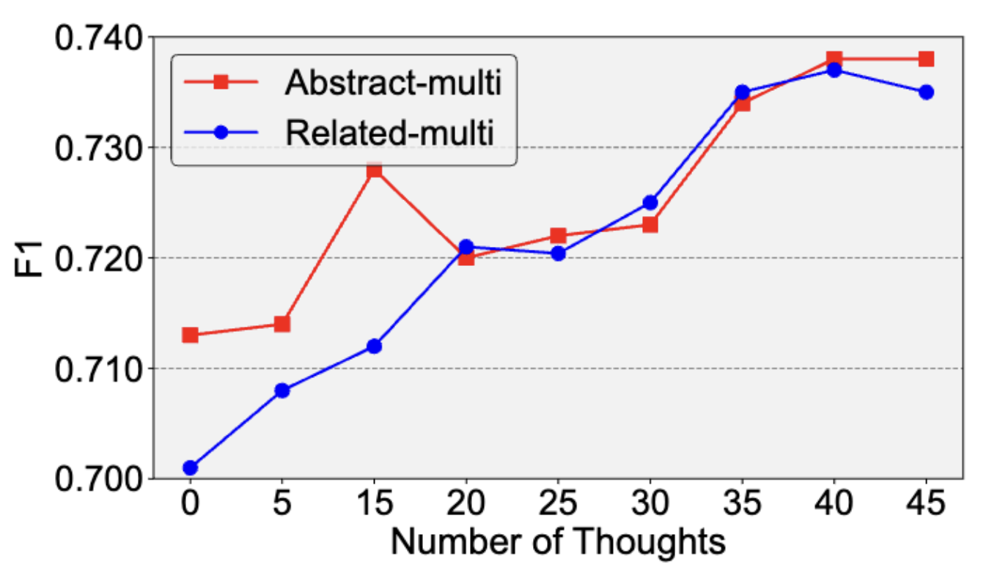
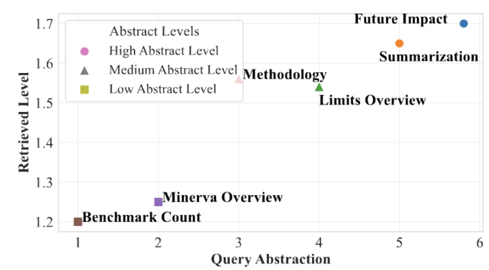
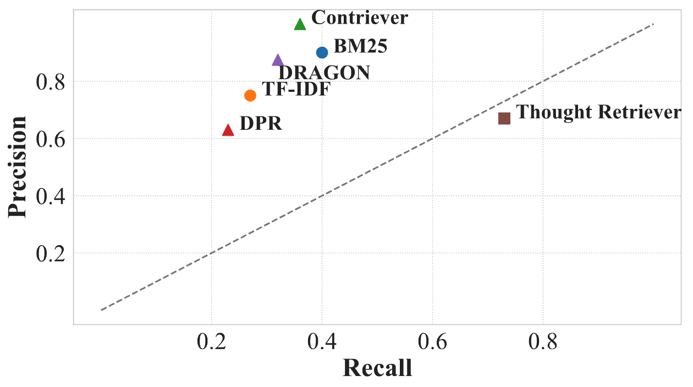
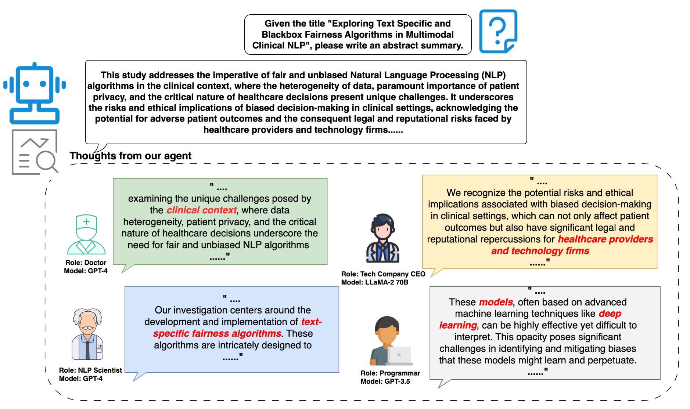

Large language models (LLMs) have transformed AI research thanks to their powerful internal capabilities and knowledge. However, existing LLMs still fail to effectively incorporate the massive external knowledge when interacting with the world. Although retrieval-augmented LLMs are proposed to mitigate the issue, they are still fundamentally constrained by the context length of LLMs, as they can only retrieve top-K raw data chunks from the external knowledge base which often consists of millions of data chunks. Here we propose Thought-Retriever, a novel model-agnostic algorithm that helps LLMs generate output conditioned on arbitrarily long external data, without being constrained by the context length or number of retrieved data chunks. Our key insight is to let an LLM fully leverage its intermediate thoughts generated when solving past user queries, organizing them in thought memory, and retrieving the relevant thoughts when addressing new queries. Notably, Thought-Retriever can self-evolve through continuous user interactions thanks to the growing number and depth of thoughts. Besides algorithmic innovation, we further meticulously prepare a novel benchmark, AcademicEval, which requires an LLM to faithfully leverage ultra-long context to answer queries based on real-world academic papers. Extensive experiments on AcademicEval and two other datasets validate that Thought-Retriever remarkably outperforms state-of-the-art baselines by achieving a 5%-45% higher win rate. More importantly, we further demonstrate 2 exciting findings: (1) Thought-Retriever can indeed help LLM self-evolve after solving more user queries; (2) Thought-Retriever learns to leverage deeper thoughts to answer more abstract user queries.

For instance, consider the scenario where an LLM can only process two data chunks in its context window, yet \( \mathcal{K}_i = \{K_1, K_2, K_3, K_4\} \) are needed to fully answer a query. Traditional methods might retrieve accurately but fail to cover all relevant data, compromising either precision or recall.
In contrast, Thought-Retriever leverages past LLM thoughts and balances low-level facts and high-levle thoughts to answer user queries, offering a flexible and easy approach to achieve better information retrieval.

After receiving a user query \(Q_i\), Thought-Retriever \(R\) retrieves relevant information \(T_i\) from external knowledge \(K\) and previously generated thought memory \(T\) via embedding similarity ranking. This process is formulated as \(T_i \leftarrow R(Q_i, K \cup T)\).
Based on the retrieved information \( \mathcal{T}_{i} \), we design a prompt to combine \( \mathcal{T}_{i} \) and user query \( Q_i \) and feed the prompt to an LLM \( L \) to get the answer \( A_i \). It can be articulated as \( A_i \gets L(Q_i, \mathcal{T}_{i}) \).
We can generate thoughts via LLM \( L \) using the obtained answer \( A_i \) and its query \( Q_i \). However, redundant or meaningless thoughts during the generation process may harm the LLM performance. To solve this issue, we design a special prompt so that LLM \( L \) can generate thoughts \( T_i \) and thought quality confidence \( c_i \) based on the user's query \( Q_i \) and corresponding answer \( A_i \). This can be described as \( T_i, c_i \gets L(Q_i, A_i) \).
The confidence of thought quality \(c_i\) is a boolean indicator that determines whether the newly generated thought should be updated into the thought memory \(\mathcal{T}\). Here, we design that if the LLM is confident about its answer, where \(c_i\) is True, \(\mathcal{T}\) will be updated.
Current benchmarks for assessing agent long-context memory utilization involve tasks such as question-answering, long-context summarization, and classification. Despite being well-constructed, they are limited in flexibility and real-world impact and are costly to acquire. To address these issues, we introduce an innovative benchmark, AcademicEval, based on academic papers from arXiv collected on a weekly basis. AcademicEval is superior in three aspects:
For a more detailed introduction to the benchmark and instructions on usage, please refer to this LINK.
Experiments on our AcademicEval benchmark and public benchmarks validate that Thought-Retriever remarkably outperforms state-of-the-art baselines.

In addition to the main results, we also identified three interesting and insightful findings that further support the promising nature of our Thought-Retriever framework.
The experiment results, shown in Figure (a), demonstrates that more interactions with he users enable Thought-Retriever to assist LLMs in self-evovling and developing deep understanding, demonstrating a new type of scailing law .
The experiment illustrated in Figure (b), where the y-axis represents the question's abstraction level and the x-axis denotes the average abstraction level of all information retrieved by our method, demonstrates that Thought-Retriever tends to utilize deeper thoughts when addressing more abstract queries.
In the motivational example, we highlighted where traditional methods fell short in achieving satisfactory recall and precision values. Here, in the experiment depicted in Figure (c), we demonstrate that, compared with state-of-the-art retrievers, Thought-Retriever, despite a minor trade-off, does not significantly compromise its ability to retrieve the most relevant information (a notable improvement in recall value), thereby achieving a better balance between precision and recall.

(a) Self-evolve

(b) Deeper thoughts help abstract queries

(c) Better recall and precision balance
More Content here....
Forming thoughts can be a lengthy process. When a new agent lacks relevant memory or external knowledge, it is challenging to develop high-quality thoughts and memories from scratch. Consequently, we conducted cases study to show that Thought-Retriever can help the agent quickly learn from other agents who have already formed expert knowledge.

@article{feng2024thought,
title={Thought-retriever: Don't just retrieve raw data, retrieve thoughts},
author={Feng, Tao and Han, Pengrui and Lin, Guanyu and Liu, Ge and You, Jiaxuan},
year={2024}
}